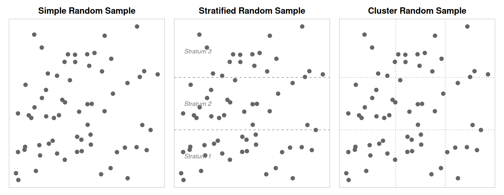

Sampling from a Population
Key Concepts
- Distinguish between a sample and a population
- Recognize when it is appropriate to use sample data to make inferences about the population
- Critically examine the way a sample is selected, identifying possible sources of bias
- Recognize that random sampling is a powerful way to avoid sampling bias
- Identify other potential sources of bias that may arise in studies on humans
Motivation
A state in the upper Midwest is currently considering a bill that would provide amnesty to underage persons who call for help from the authorities with an overly intoxicated person. One of the state senators who represents a district that contains a university is hesitant to initially support the bill, so she has commissioned a study to learn about how the residents of her district feel about the bill. The senator will select from one of the three study options.
Study 1: “Would you support a bill that prevents authorities from giving a ticket to an underage person who has asked for help with an overly intoxicated person?” Participants would be recruited by purchasing ads on the local radio stations.
Study 2: “Would you support a bill that has the potential to allow underage people to drink with no fear of retribution?” Participants would be a random sample of all taxpayers in the district gathered by door-to-door interviews.
Study 3: “Would you support a bill that helps reduce the chances of undergraduate death due to alcohol poisoning by guaranteeing that underage people who request emergency medical assistance for someone who is very intoxicated will not receive disciplinary sanctions from the university?” Participants would be a random sample of all property owners in the district contacted to fill out a survey via email.
- Rank the three studies based on the question they ask. Briefly justify your ranking.
- Rank the three studies based on the sampling method. Briefly justify your ranking.
- If you could mix the questions and sampling methods, which combination do you think would be the best?
Collecting a sample from a population
A population includes all individuals or objects of interest.
A census occurs when every case in the population is measured.
The sampling frame is a list of the names of all subjects or objects in the population.
Data are collected from a sample, which is a subset of the population.
Statistical inference is the process of using data from a sample to gain information about the population.
If we want to answer a question about a population, one way we could find an answer is to look at every case by taking a census. However, most of the time this is not feasible. Taking a census could take months and is often very costly. Sometimes items are destroyed in the sampling process, such as measuring the tensile strength of a wire or the length of life of a light bulb or battery. Collecting a census in these cases would be foolish. So, most of the time, researchers take a sample from the population and use what they find from the sample to describe the population. In order to make sure that all units in the population are included, a sampling frame is compiled and used to select the subjects for the sample. This process of using a sample to describe the population is called statistical inference, and the accuracy of the inference can be greatly impacted by the quality of the sample and how well the sample reflects the characteristics of the population.
Good ways to obtain a sample
A simple random sample is obtained when every sample of a given size is equally likely to be the one selected.
Stratified random sampling occurs when the population is divided into homogeneous, non-overlapping groups (called strata) and a simple random sample is selected from each group.
There are a number of appropriate ways to randomly select your sample. The most basic type of sampling is the simple random sample. However, there are many times when we can’t conduct a simple random sample. Stratified random sampling occurs when the population is divided into homogeneous, non-overlapping groups (called strata) and a simple random sample is selected from each group.
Cluster random sampling divides the population into many non-overlapping groups (called clusters), randomly selects a subset of clusters, and collects data from every case in the cluster.
Cluster random sampling occurs when the population is divided into many non-overlapping groups (called clusters), a simple random sample of clusters is obtained, and data is collected from every case in the cluster.
Class Example 1.1: Picking a good sampling method
Which type of sampling method is most appropriate in the following scenarios?
- Researchers want to test a new math curriculum for third graders. They only have the budget to try the curriculum in 10 elementary schools.
- Processor chips are continuously manufactured at a production plant. To ensure that they meet size specifications so that they will fit inside an iPhone, manufacturers want to test 100 chips throughout the day.
- A player’s agent wants to know the average salary for each position of major league baseball.
Class Example 1.2: Random Sampling versus Haphazard Sampling
Get into pairs and select one person to do option a) and one person to do option b). Once you have finished, copy down your partner’s sequence of heads and tails.
- Flip a coin 30 times and record whether or not you get heads or tails.
- Without using a coin, think of a random sequence of 30 heads and tails.
Bad ways to obtain a sample
Sampling bias occurs when the sample does not accurately represent the population of interest.
Voluntary response sampling occurs when a researcher asks people to volunteer to be participants instead of randomly selecting possible participants.
Convenience sampling happens when a researcher just uses the most convenient group as a sample.
Without a random sample, we may encounter sampling bias which occurs when the sample does not accurately represent the population of interest. One common sampling technique that will nearly always be biased is voluntary response sampling. With this kind of sampling, a researcher asks people to volunteer to be a part of a study. Another common type of sampling that produces biased results is the convenience sample. In a convenience sample, a researcher simply uses the most convenient group available as the sample.
Class Example 1.3: Texting and Driving
In 2024, Mercury Insurance emailed an optional poll to 1,000 of their insured drivers asking if they have ever been in or almost in an accident while texting and driving. 26% of respondents answered yes.
- What is the sample?
- Can we conclude that 26% of all drivers have either been in or almost in an accident while texting and driving?
- Explain why it is not appropriate to generalize these results to all drivers, or even to all drivers who are insured by Mercury Insurance. What is the problem with this method of data collection?
- How might we select a sample of people that would give us results that we can generalize to a broader population?
- Is the variable in this study quantitative or categorical?
What else might go wrong?
Bias occurs when the results from the sample differ from the population.
Response bias is the tendency for people to not answer questions honestly.
Non-response bias occurs when the response rate is very low.
Undercoverage occurs when part of the population is not considered for inclusion in the sample.
Even when we take care to collect a random sample, sometimes we inadvertently introduce bias which causes our sample to differ from the population. For example, asking sensitive questions may result in response bias because participants do not feel comfortable answering the question truthfully. If a lot of people do not respond to a survey, it will suffer from non-response bias. Finally, if the population from which the sample is drawn excludes groups of people, then the sample will suffer from undercoverage.
Class Example 1.4: Wording bias
A survey is to be conducted using a random sample of citizens in a town, asking them if they support raising taxes to increase funding for the public school.
- Write the question in a way that is likely to bias the results toward more yes answers.
- Write the question in a way that is likely to bias the results toward more no answers.